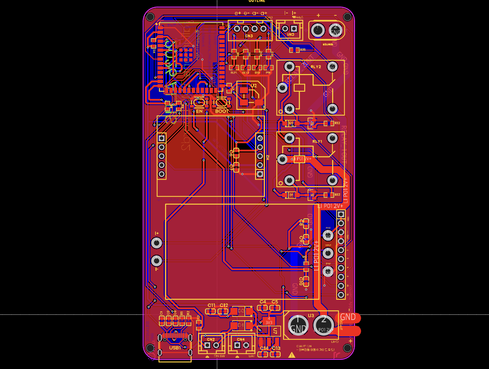
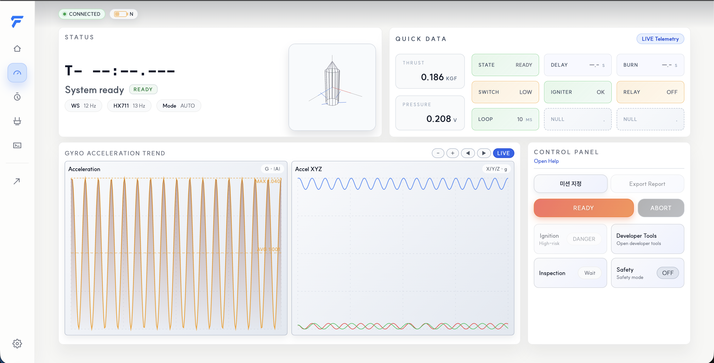
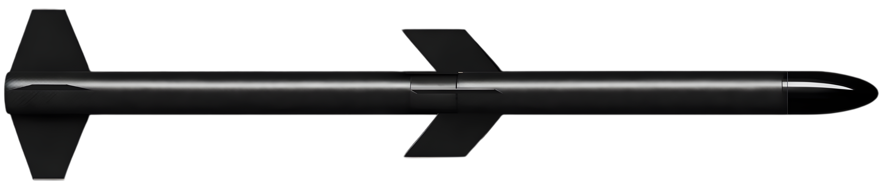

고체 로켓 모터 설계·제작, 추력 계측 및 추진 시스템 검증을 담당합니다.
높은 곳에서 빛나기 위해, ALTIS는 경상국립대학교 우주항공대학 항공우주공학부 학생들이 직접 로켓을 설계·제작·시험하는 동아리입니다. 우리는 스스로 배우고 만들며, 로켓 시스템 전반의 이해와 기술 역량을 차근히 쌓아갑니다.
그 빛을 실제로 쏘아 올리기 위해 고체 로켓 모터 설계·제작부터 추력·압력 계측, 전자부(에비오닉스)와 구조 설계, 지상 및 발사 시험까지 전 과정을 수행합니다.
비행 데이터 계측과 점화 제어를 담당하는 에비오닉스 보드입니다. 전원 안정화, 센서 인터페이스, 릴레이 제어 모듈을 통합해 발사 시퀀스를 안정적으로 수행합니다.


현장 점화와 계측을 위한 통합 콘솔로, 시스템 상태 확인과 실시간 데이터 모니터링을 제공합니다. 안정성을 우선한 작업 흐름으로 점화 준비부터 기록 관리까지 하나의 화면에서 제어합니다.
비행 종료 후 안전한 회수를 위해 낙하산 사출 모듈을 설계했습니다. 분리부 하우징과 가이드 구조를 단순화해 신뢰성을 높이고, 현장 점검과 조립이 쉬운 구조로 구성했습니다.
이번 모터는 2 MPa의 비교적 낮은 압력을 기준으로 안전을 우선해 설계한 고체 모터입니다. 실제 제작과 시험을 염두에 두고 구조를 단순화했으며, 안정적인 점화와 추력 확보를 목표로 반복 시험에 적합한 형상으로 개발했습니다.

동체 설계는 탑재체 보호와 구조 강도를 동시에 확보하는 방향으로 설계했습니다. 내부 전자부 탑재와 분리 모듈이 안정적으로 결합되도록 구조 간섭을 최소화했습니다.
ALTIS가 출연한 영상을 통해 팀의 현장과 프로젝트를 확인해보세요.